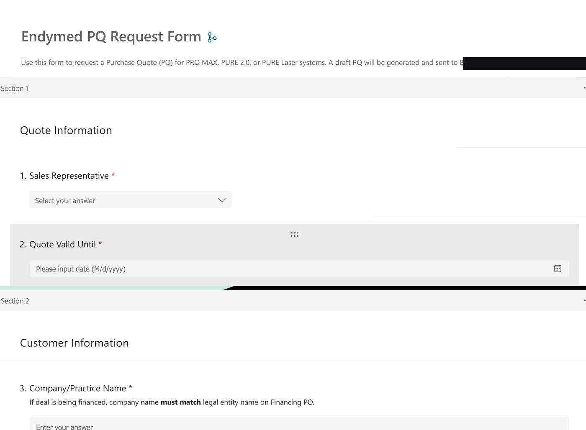
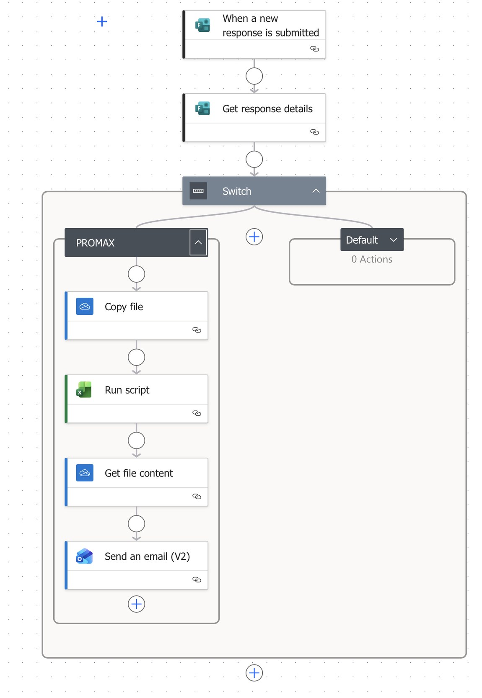
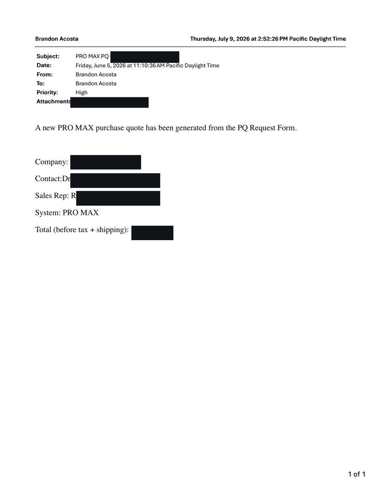

CRM Infrastructure
A CRM built from scratch to give a national team one operating rhythm.
No standardized CRM. No consistent lead lifecycle. Limited pipeline visibility for leadership.
I built a Monday.com CRM from the ground up — one lead lifecycle, and an identical set of boards for every rep. The system, walked through end to end:

Every lead enters through a required-field intake form, so data is clean at the point of capture.

The Company Leads Inbox holds the master record; automation formats the lead and creates a duplicate on the assigned territory rep's board — no manual triage.

Every rep works an identical board with the same six standardized lead statuses:
| New Lead | Captured, not yet worked |
| Contacted | Initial outreach made |
| Engaged | Two-way conversation underway |
| Qualified | Fit and intent confirmed — ready for a deal |
| Follow-Up Later | Not now; scheduled to revisit |
| Unqualified | Not a fit; archived |

Qualified leads automatically become deals and move through standardized, weighted stages:
| 25% | Feeder / Lead Developed |
| 50% | Scheduled Demo or Presentation |
| 75% | Completed Demo or Presentation |
| 90% | Potential Revenue for Current Month |
| 95% | Signed PQ |
| 100% | Deal Closed and Shipped |

Every week, an automated report emails each territory rep with their current pipeline already populated from the CRM.
Leadership gained a live managerial dashboard — one standardized commercial operating rhythm across the whole team.
All customer data, names, and dollar values are redacted. Click any screenshot to enlarge.
Client Onboarding System
One repeatable journey from signed deal to a certified, supported customer.
The customer journey became fragmented after the deal was signed — fulfillment, financing, installation, training, and marketing handoffs were disconnected.
I built a client onboarding board, triggered at closed-won, that moves every customer through one standardized path:
Order Confirmed
Shipment & Delivery
Installation
Schedule Training
Training Confirmation
Training Completed / Certification
30-Day Check-In

Each deal moves across the stages with device, funding, shipping, installation, and training dates tracked in one shared view. Customer names redacted.
Standardized customer communications
Every touchpoint uses a standardized template and resource set, delivered automatically during onboarding — so the experience is consistent regardless of who sends it.
Congratulations on adding the EndyMed PRO MAX system to your practice. Your next step is to schedule your in-person clinical training — a hands-on, full-day session with your assigned clinical trainer (typically 9:00 AM–4:00 PM).
Please reply with two to three full-day dates over the next two weeks, and the names and roles of each participant. A preparation folder with the schedule, prep guide, and protocols is linked below.
Recreated from the live template — client and trainer details shown as placeholders.
A standardized training resource system. Every customer receives the same prepared materials:

Cleaner handoffs
Fulfillment, clinical, and marketing work from one shared board.
Faster scheduling
Standard templates and triggers remove the back-and-forth.
Consistent experience
Every customer starts the same, well-supported way.
RFM Segmentation & Re-Engagement Strategy
A consulting-style analysis that turned a scattered install base into a ranked target list.
Revenue needed to grow from the existing install base — but the data to target it was scattered across systems.
I consolidated the install base and scored it, then translated the analysis into a prioritized re-engagement strategy.
The analysis became EndyMed's 2026 re-engagement strategy, presented to leadership. Redacted deck:
Purchase Agreement Automation
From a 30–60 minute manual quote to seconds, with cleaner data.
Manual PQ creation. Incomplete submissions. Manual pricing on every agreement.

Reps complete a standardized, required-field request in roughly 5–10 minutes — no PQ can be created until it's complete.

On submission, a Power Automate flow copies the template, runs the pricing script, and prepares the agreement.
The workflow, end to end.
The automation generates a completed approval email with pricing, terms, warranty, and agreement language already populated — and attaches a spreadsheet copy of the Purchase Agreement for review.

The approval email, produced automatically from the request form. Customer, rep, and dollar values redacted.
Operational Excellence
Turning tribal knowledge into scalable, documented systems.
Too many processes relied on tribal knowledge — inconsistent, hard to scale, and dependent on who happened to be handling them.
I organized operating documentation and enablement into four scalable systems:
Internal Operations
SOPs, agreements, and protocols in one governed library.
Sales Enablement
Presentations, studies, and field resources reps can rely on.
Clinical Training
Prep materials, schedules, and certificates, standardized.
Service & Support
Documented, repeatable procedures for post-sale issues.


Deep dive — Replacement Tip Request. I replaced inconsistent, case-by-case replacement decisions with one repeatable, documented SOP.
Old workflow
- Customer reports a broken tip
- A single replacement is shipped, case by case
- Extra shipping cost and limited oversight
- Repeat-request risk
New workflow
- Customer submits a structured claim
- Issue reviewed against a documented policy
- Store credit issued toward the next order when appropriate
- Repeat / high-value issues escalated
Consistent execution
The same process runs the same way, every time.
Better documentation
Decisions are written down and auditable.
Lower operational risk
Less dependence on any single person's knowledge.
Clear ownership
Every workflow has a defined owner and trigger.